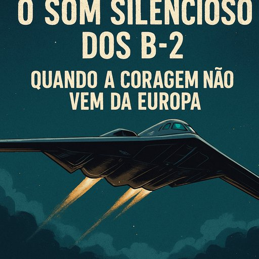

Publicado em 2025-06-22 09:20:18
Na calada da noite, ao estilo de quem não precisa de anunciar o inevitável, os Estados Unidos lançaram os seus B-2 Spirit sobre o Irão, destruindo com precisão cirúrgica três centrais estratégicas do regime dos aiatolas. Uma ação que, embora polémica entre os 'prudentes do costume', marca um novo capítulo na geopolítica mundial.
A Europa, mais uma vez, adormecida nos seus delírios pacifistas e nas suas narrativas académicas, observou em silêncio, talvez incomodada com a eficácia da ação. Enquanto Bruxelas promove cimeiras sobre o clima e igualdade de género, o mundo real continua a ser moldado por decisões cruas e, por vezes, brutais — mas necessárias.
O Irão, patrocinador oficial do terrorismo global, fornecendo drones à Rússia, armas ao Hezbollah, logística ao Hamas, e apoio aos extremistas do Iémen, tem sido deixado impune por demasiado tempo. Israel teve a coragem de romper o ciclo. Os EUA, desta vez, mostraram que ainda sabem o que significa liderar no tabuleiro global.
Esta ação representa não apenas a destruição de infraestruturas nucleares perigosas, mas também a destruição de uma narrativa hipócrita: a de que todos os lados são iguais, de que o diálogo basta, de que devemos compreender quem grita "Morte ao Ocidente" todos os dias, enquanto planeia a sua próxima ofensiva.
Os líderes europeus? Apáticos. Os comentadores? Ofendidos. Os jornalistas dos jornais do sistema? A preparar editoriais sobre "desproporcionalidade". É esta a realidade triste de uma Europa sem espinha, que já não distingue entre bem e mal, entre justiça e submissão.
Mas nem tudo está perdido. Há quem resista. Há quem grite. Há quem escreva. E há quem aja. Israel e os EUA mostraram, juntos, que o terrorismo com chancela estatal tem um preço. E que o Ocidente, ainda que hesitante, pode reerguer-se quando guiado por quem não tem medo de sujar as mãos para limpar o mundo.
Nota final: Que esta operação seja um ponto de viragem. Porque a paz não se alcança com discursos fofinhos, mas com a coragem de enfrentar o mal — olhos nos olhos.
Artigo de Augustus Veritas Lumen
"O som dos B-2 na madrugada não foi só o ruído da destruição — foi o sussurro da justiça a atravessar o céu sombrio da covardia europeia."